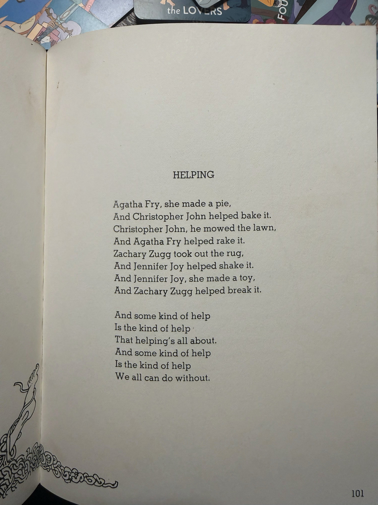
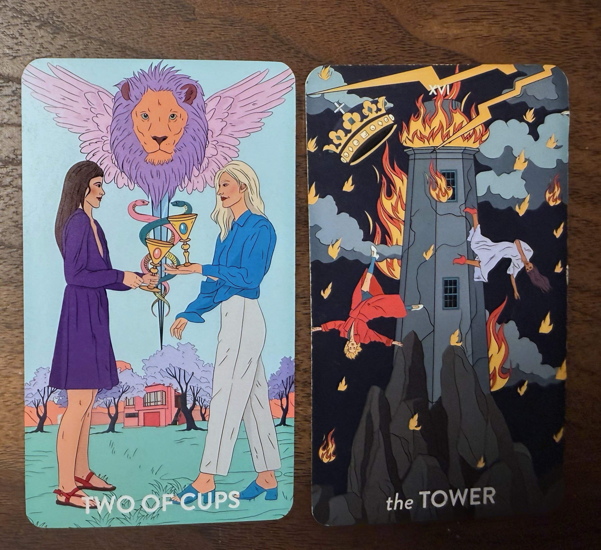
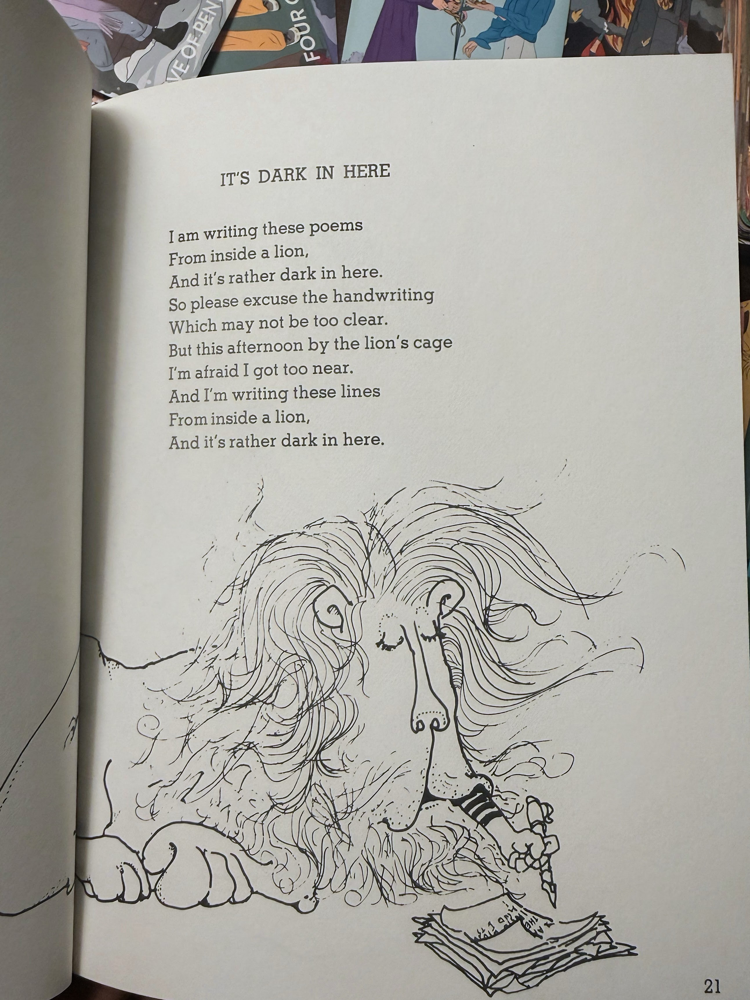
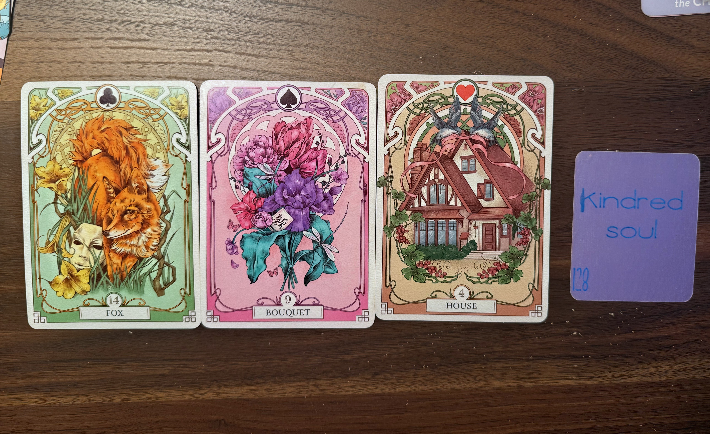

private gallery
A minimal archive space to listen back, follow your spread, and access links connected to this reading.
session audio
session videos
visual notes from this reading




links from this reading
tips for talking to ai about relationships
- "You are a psychologist specializing in relationships. Assess the situation from a psychological perspective and identify the underlying currents in their words or actions that aren’t immediately apparent on the surface."
- Share what you have already decided or tried, so the AI does not keep returning to steps you have moved past.
- Ask for multiple angles (emotional, practical, spiritual, communication‑focused) rather than a single “yes/no” prediction.
- Use questions like “what might I be overlooking?” or “what would be a kind next step?” to keep the focus on your agency.
- "Be fully unbiased. Consider everyone involveds perspective."